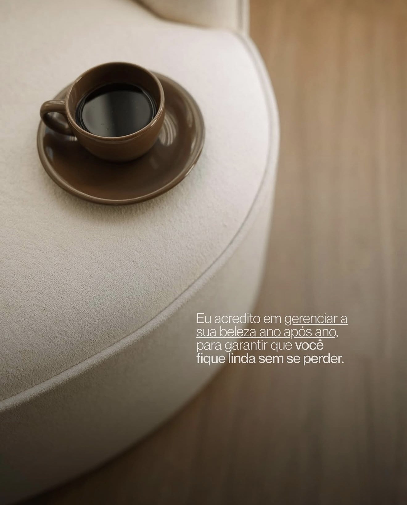
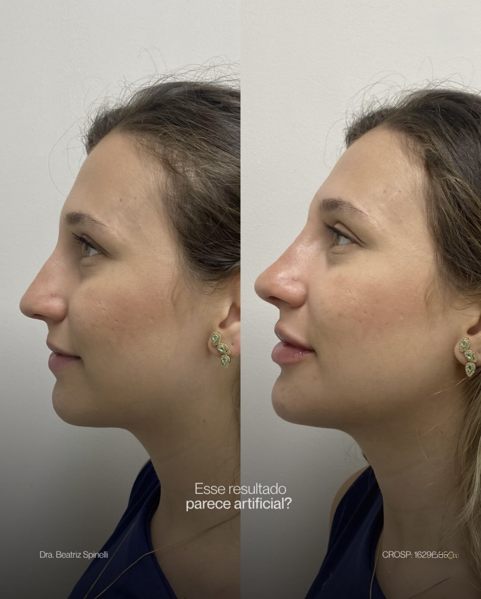
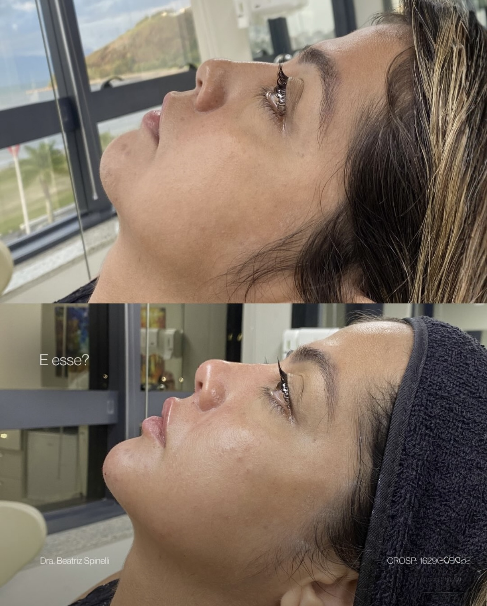
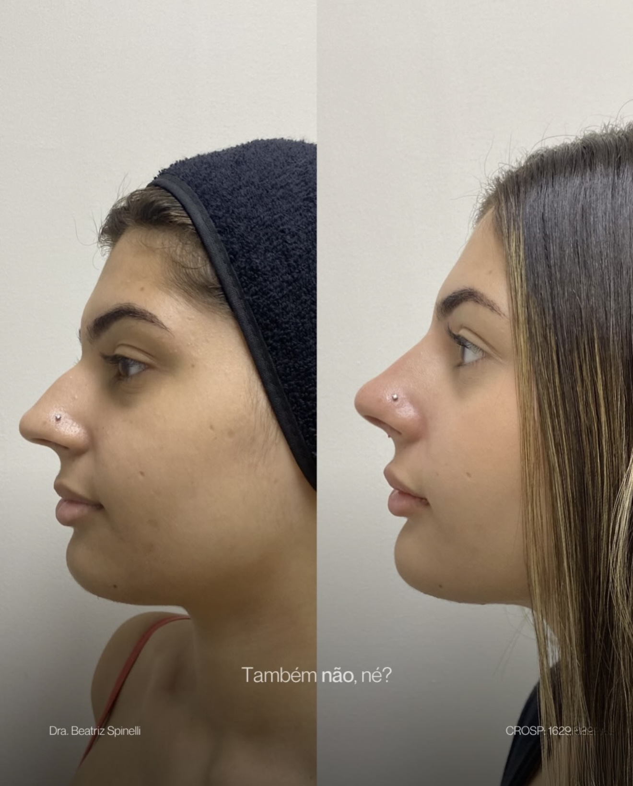

Resultados elegantes, sutis e com muita naturalidade — o cuidado de saber exatamente o que realça a sua beleza, sem exageros.

Nem sempre o "mais" é o que te deixa mais bonita.
O meu trabalho não é te vender todos os procedimentos possíveis — é ter um olhar estratégico para enxergar o que realmente precisa ser feito. Aqui existe cuidado, técnica e muito respeito pela sua beleza.
Cirurgiã-dentista especialista em Harmonização Facial (CROSP 162964). Meu compromisso é com a naturalidade: valorizar a atemporalidade dos seus traços sem abrir mão dos meus valores como profissional.
Quando o trabalho é bem feito, ninguém sabe dizer o que mudou — só percebem o quanto você está mais bonita. É exatamente isso que eu entrego.
Cada procedimento é indicado a partir de uma avaliação individual do seu rosto — pensando no conjunto, na harmonia e na leveza da sua expressão.
Contorno e volume equilibrados, respeitando o seu sorriso natural.
Ajuste do perfil do nariz sem cirurgia, com resultado discreto e elegante.
Definição do terço inferior e do queixo para um rosto mais harmônico.
Perfil mais leve e definido, valorizando o contorno do rosto e do pescoço.
Suavização de linhas de expressão preservando a naturalidade do olhar.
Estímulo de colágeno para uma pele firme e uma beleza que dura no tempo.
Resultados reais de pacientes. A diferença aparece — mas ninguém consegue apontar exatamente o que mudou.



Imagens de pacientes reais. Resultados variam de pessoa para pessoa conforme avaliação individual.
"Continuei sendo eu — só que a versão que eu sempre quis ver. Ninguém percebeu o procedimento, só disseram que eu estava diferente, mais leve.
"Eu tinha medo de ficar artificial. A Bea foi honesta sobre o que fazia sentido pra mim e não empurrou nada. Saí com um resultado sutil e elegante.
"O cuidado e o acompanhamento fizeram toda a diferença. Me senti segura em cada etapa — hoje tiro foto de perfil sem pensar duas vezes.
Agende sua avaliação pelo WhatsApp e eu te confirmo os endereços completos e a melhor data em cada unidade.
Me chama no WhatsApp e vamos conversar sobre o que faz sentido para o seu rosto — com calma, verdade e naturalidade.
Agendar minha avaliação →